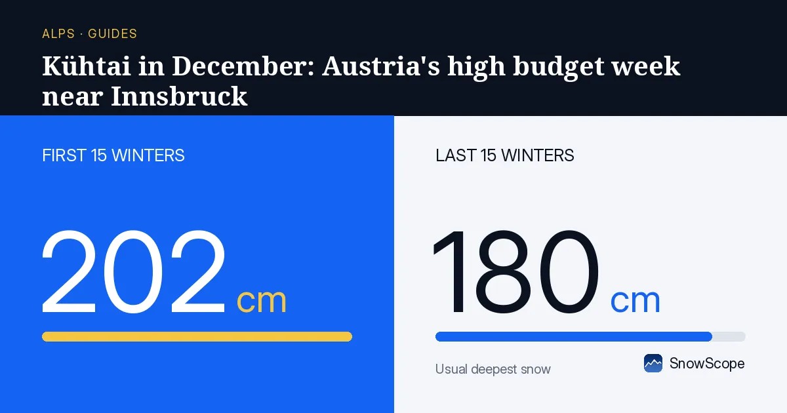

Kühtai in December: Austria's high budget week near Innsbruck
Kühtai's lowest lift stands at 1939 m, higher than the top station of many Austrian resorts. On a typical 15 December our 46 winters of snow history give 60 cm at that base, and the official low season runs from 27 November to 18 December, with a day pass at EUR 50.50.
See the live snow forecast for Kühtai in the SnowScope appSnow depth, powder alerts and the 3D map, free.
From the bottom lift to the top
Think of snow as water stored on a slope: the higher you go, the less of it melts or falls as rain. Kühtai shows this neatly. At the base (1939 m) a typical 15 December has 60 cm, at mid-mountain (2223 m) 72 cm and at the top (2507 m) 112 cm.
Even the thin years are not bare here. In 1 winter in 10, 15 December has only 27 cm at the base and 34 cm at mid-mountain, but in none of our 46 winters was the base without snow on that day. The mapped area is small, 34 km of runs and 13 lifts, but all of it is high.


The weeks that work
At the base the share of winters with 30 cm or more goes from 70 % in 1-7 December to 85 % in 8-14 December, then 93 % and 96 % in the two weeks before New Year. At mid-mountain it is already 89 % in the first week.
So in Kühtai you can book early December with more confidence than almost anywhere outside a glacier. The usual first day with 30 cm at the base is 12 November.
Then and now
Kühtai has not escaped the warming trend, but it has lost less than lower resorts. The December average at the base fell from 53 cm in the first 15 winters to 49 cm in the last 15; at the top it stayed at about the same level (103 and 104 cm). In Christmas week, 87 % of the last 15 winters still had 30 cm at the base.
Last winter was weak: 36 cm at the base on 15 December. Weak here is still skiable.
The money
The official 2026-27 price list is clear. In the low season (27 November to 18 December) an adult day pass costs EUR 50.50 and a 6-day pass EUR 269, the 6-day pass covering Kühtai and Hochoetz. From 19 December the high-season prices are EUR 66.50 and EUR 353.
From 4 December, passes of 2 days or more are valid in the whole Kühtai-Hochoetz area, so a pre-Christmas week also gives you a second ski area at the same price.
Side by side with the Stubai Glacier
The Stubai Glacier, the other high December option close to Innsbruck, is deeper at the top: 169 cm on a typical 15 December at 3208 m, against 112 cm in Kühtai. Its lowest lift (1692 m) is lower and thinner, with 40 cm and 72 % of winters with 30 cm in the week of 15-21 December.
Its main-season day pass costs EUR 75.50 and the 6-day pass EUR 355. For a December week before 19 December, Kühtai's EUR 269 is the lower bill.
Tips for skiers
- Book any week up to 18 December to get the low-season price (EUR 269 for 6 days instead of EUR 353).
- Use the regional pass to spend a day at Hochoetz when the wind is strong on Kühtai's open slopes.
- Kühtai is a pass road village: carry winter tyres and chains after snowfall.
- Before leaving the piste, read the Tyrol avalanche report (avalanche.report).
More maps (external sites)
References and credits
- Kühtai: official lift-pass prices (2026-27), checked 13 November 2026 www.kuehtai.info/service/service/preise-wintersaison-2026-2027.html
- Stubaier Gletscher: official lift-pass prices (2026-27), checked 13 November 2026 www.stubaier-gletscher.com/en/ski-area/prices/
About these numbers
Snow numbers: SnowScope snow history, 46 past winters (1980-81 to 2025-26) at the resort's heights, corrected for height (an estimate for an area, not resort reports); 'good snow' = 30 cm or more on the ground as the week's average. Map: our typical depth on 15 December spread over the terrain by height. Runs and lifts: OpenSkiMap mapping. Lift-pass prices: the resorts' official price lists, checked on 13 November 2026; prices can change.
Official avalanche bulletins: Avalanche.report – Euregio Tyrol
Cite this report
For research, teaching or the press: the numbers and charts are free to reuse under CC BY 4.0 with this citation.
SnowScope (2026), Kühtai in December: Austria's high budget week near Innsbruck, https://snowscope.app/blog/en/2026/11/kuehtai-december-ski-trip-highest-village-innsbruck-budget.html, accessed 2026-11-14
SnowScope (Atlas Labs). (2026, November 14). Kühtai in December: Austria's high budget week near Innsbruck. SnowScope snow reports. https://snowscope.app/blog/en/2026/11/kuehtai-december-ski-trip-highest-village-innsbruck-budget.html
BibTeX
@misc{snowscope2026kuehtaidecemberskitriphi,
author = {{SnowScope (Atlas Labs)}},
title = {Kühtai in December: Austria's high budget week near Innsbruck},
year = {2026},
month = nov,
howpublished = {\url{https://snowscope.app/blog/en/2026/11/kuehtai-december-ski-trip-highest-village-innsbruck-budget.html}},
note = {Published 2026-11-14 13:29 UTC; accessed 2026-11-14}
}· CC BY 4.0 · Methods, data and tools →
Kühtai: snow and temperature by height, this winter vs last (tools) →
Follow Kühtai
Free: a message when fresh snow is coming, and the forecast every morning.
More snow reports

We rank French ski resorts by December snow odds and checked pass prices, starting from 36.00 EUR for an adult day pass in Les Karellis.

Our 46-winter Alps record at 108 points from 667 to 3,872 m: snow days down at all of them, clearly at 81 %. What changed at each height, and why.

Here are the new maps of the next two weeks in the Alps, 13 November to 26 November: the new snow expected on the terrain, read from the two global …